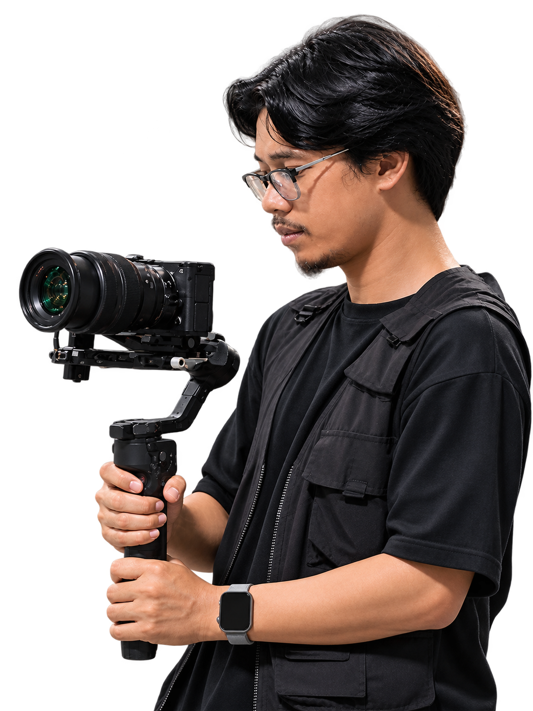
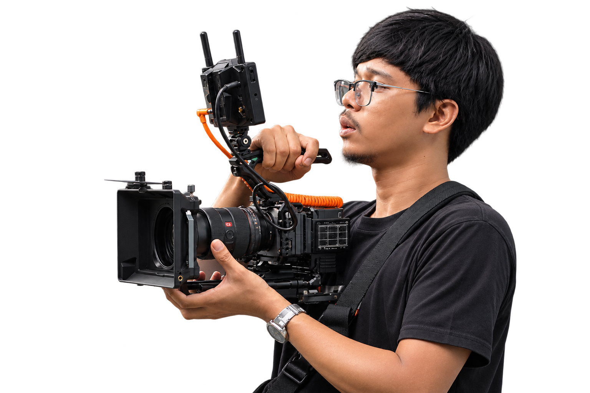
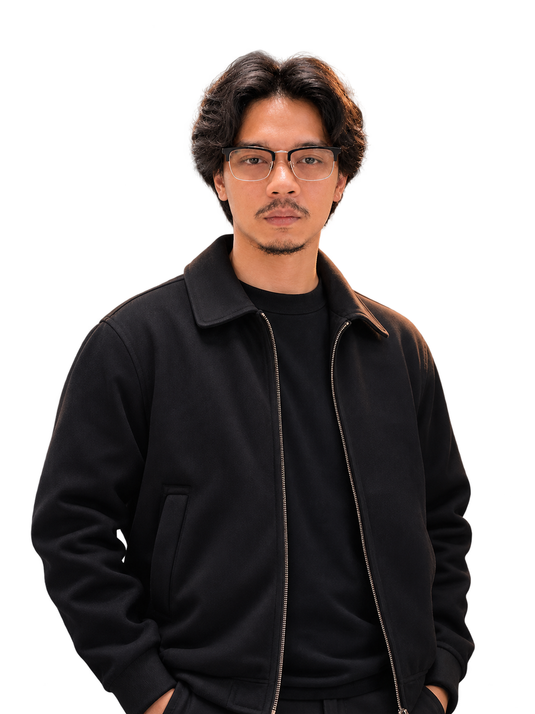

Kamera dan visual
Exposure, white balance, pemilihan lensa, depth of field, visual storytelling, log, frame rates, monitoring, dan media backup.
VIDEOGRAPHER LEPAS



Videographer freelance dengan pengalaman berkarya sejak 2014 dan menangani proyek berbayar sejak 2015. Berpengalaman dalam produksi mandiri maupun kolaborasi tim untuk berbagai kebutuhan visual.
Berfokus pada produksi corporate/company profile, music video, TVC dan iklan, event, serta video produk dan brand. Peran utama sebagai videographer dan camera operator, dengan pengalaman tambahan sebagai Director of Photography (DOP), editor, dan lighting/gaffer. Terlibat dalam alur kerja produksi dari pra produksi hingga delivery, baik secara mandiri maupun bersama tim.
Exposure, white balance, pemilihan lensa, depth of field, visual storytelling, log, frame rates, monitoring, dan media backup.
Lighting untuk interview dan corporate, pendekatan cinematic/dramatic, serta produksi indoor dan outdoor. Workflow mencakup pra produksi hingga delivery.
Sony ecosystem · Prime dan zoom lenses · Tripod/fluid head · Monitor/recorder · Shoulder rig · Gimbal · Wireless video · Slider/dolly
Adobe Premiere Pro dan Adobe Audition: menengah. Software pendukung lain: dasar.
Pengembangan keterampilan secara autodidak melalui tutorial, mentoring, dan praktik.